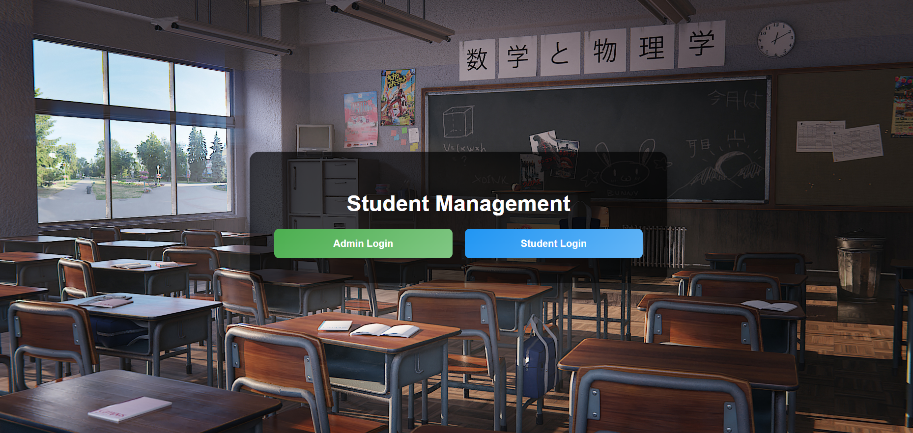
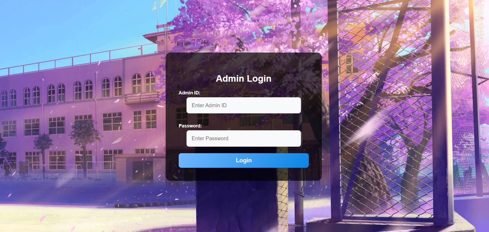
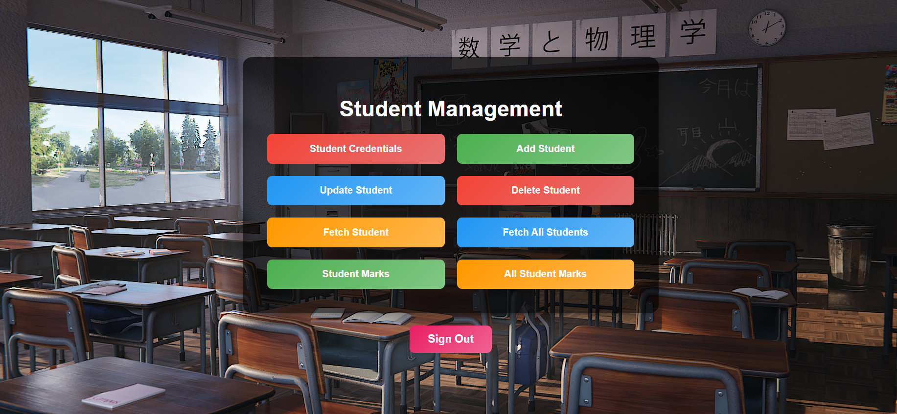
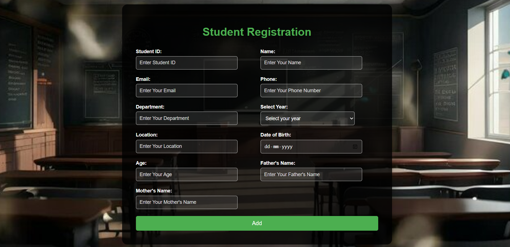
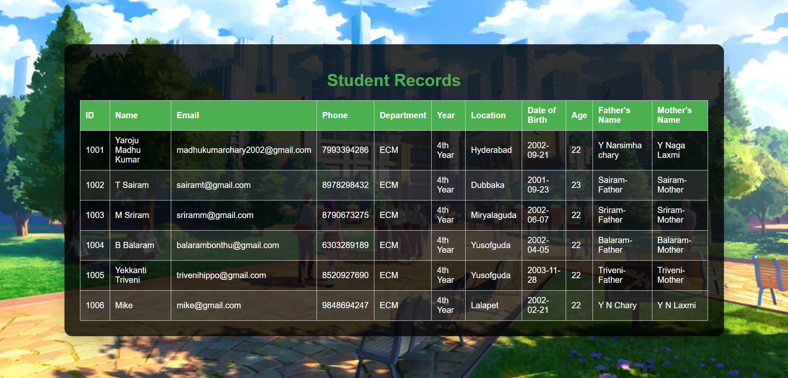
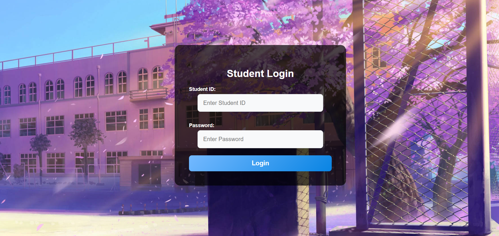
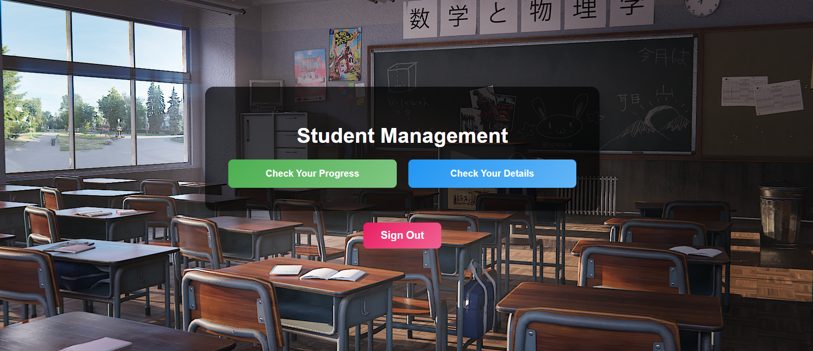
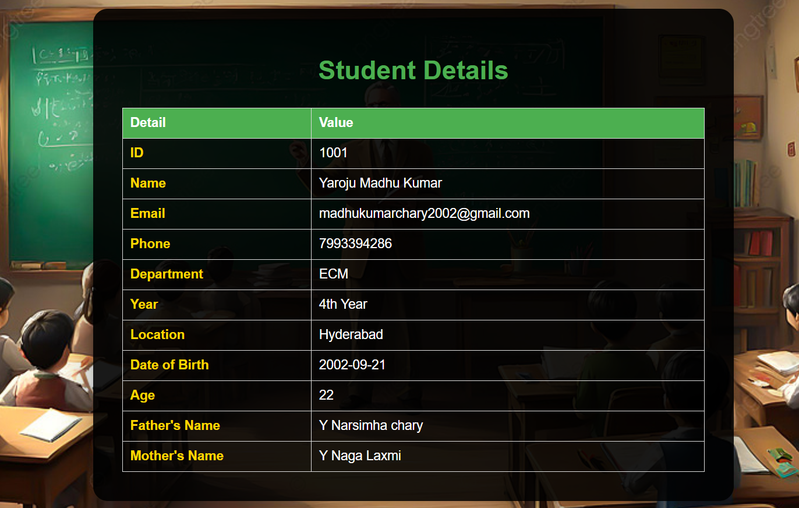

About the Project
The Student Management System is a feature-rich web application aimed at efficiently managing student details within an educational institution. This application provides administrators with tools to add, update, delete, and view student records, ensuring streamlined operations and enhanced data management capabilities.
Features
- Student Registration
- Profile Management
- Grades and Performance Analysis
- Interactive Dashboard for Administrators
- Secure Login and Authentication
Screenshots
       Technologies Used
This project is built using modern web development tools and frameworks:
Frontend: HTML, CSS, JavaScript , JSP
Backend: Java , Java Servlets
Database: MySQL and JDBC
Deployment : Apache Tomcat Server
Workflow
Login Module:
Administrators log in with secure credentials.
Dashboard:
The central hub for managing student data, with access to all CRUD operations.
Add Student Module:
A simple form interface allows the administrator to input new student details.
View/Update/Delete Module:
A tabular display of student records with action buttons for each record.
Key Functionalities
Administrator Actions:
Add Students: Input and save student details like name, age, class, roll number, and other information into the database.
Update Records: Modify existing student information to keep it current and accurate.
Delete Records: Remove student records securely when they are no longer needed.
View Records: Display detailed student data, with filtering and sorting options for better usability.
User Interface
Dynamic Pages: JSP pages are used to render data dynamically, making the interface responsive to user actions.
Form Validations: Ensures that inputs are validated both on the client side and server side to maintain data integrity.
Technological Architecture
Backend Processing:
Java Servlets: Manages HTTP requests and responses, providing the core logic for business processing.
Session Management: Ensures secure login functionality and tracks user sessions effectively.
Frontend Rendering:
JSP (JavaServer Pages): Dynamically generates HTML pages based on data from the server.
CSS & JavaScript: Enhances the interface design and ensures interactive elements like buttons and modals are user-friendly.
Database Connectivity:
JDBC (Java Database Connectivity): Establishes a connection with the MySQL database to handle queries and transactions.
Data Storage: The system uses structured tables to store student information, ensuring normalized and efficient data handling.
Transaction Management: Maintains data consistency, handling multiple user operations simultaneously.
Key Features
Conclusion
The Student Management System is a comprehensive solution designed to simplify and optimize the management of student data within educational institutions. By providing essential functionalities such as adding, updating, deleting, and viewing student records, the system ensures efficient and accurate handling of student information. It enhances operational efficiency, minimizes manual errors, and promotes better decision-making through streamlined data management. This tool is an indispensable asset for modern educational institutions aiming to achieve greater productivity and organization in managing student records.